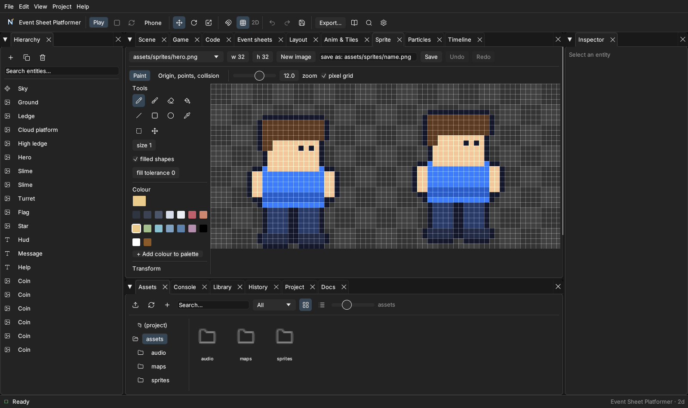

Sprites, animation and tilemaps
Use this page#
This chapter explains sprites, animation and tilemaps. Open a saved project before following editor steps. Use the topic links below for a specific task; follow Tutorials when you want a complete project to build in order.
| Find the instructions for | Go to |
|---|---|
| The Sprite tab (pixel editor) | Read this section |
| Animations | Read this section |
| Tilemaps | Read this section |
| Making a sprite object | Read this section |
Nord has built-in tools for making art: a pixel editor for sprites, an animation editor for sprite sheets and a tilemap painter for levels. You can also import art made elsewhere (Assets).
The Sprite tab (pixel editor)#

Pick a PNG (or New image), choose a tool and a colour from the palette, and paint. Flip, rotate and clear act on the selection when there is one. Undo/redo work as everywhere. Save writes the PNG; type a name first to save a copy.
The second mode, Origin, points, collision, stores extra data next to the image (<image>.meta.json):
- Origin — the pivot the sprite rotates and scales around.
- Image points — named spots such as
muzzleorhand. In an event sheet,Hero.PointX("muzzle")andHero.PointY("muzzle")give that spot's world position (it follows the hero's position, scale, flip and rotation), so bullets can leave the gun barrel. - Collision polygon — click vertices or press Auto-trace to outline the opaque pixels.
- Frame properties — for spritesheets: a per-frame duration and an event name.
Animations#
Tab Anim & Tiles → Animations
Pick a spritesheet, make named animations (idle, walk…), and list their frames (0-3, 5 or click frames in the sheet). Each animation has fps, loop, speed, ping-pong (forward then back), repeat counts, repeat to frame N (play an intro once, then loop the rest) and tags. The frame list gives every frame its own duration multiplier. The preview plays with the real timing and an onion skin (previous frame red, next green). Import GIF… turns an animated GIF into a sheet with the right timing. At runtime a frame's event fires as an entity event and a global On game event.
Tilemaps#

New tilemap… starts from any tileset image. Brushes: Paint, Rectangle, Fill, Random (ctrl-click several tiles; each cell always gets the same pick, so repainting does not flicker) and Terrain. The map can have several layers (add, rename, reorder, hide). Tick tile N blocks movement to make a tile solid, or give a tile animated frames (5, 6, 7 at 6 fps) and the game cycles it.
Terrain (auto-tile): choose Define terrain, pick a neighbour mask (which of North/East/South/West are the same terrain) and click the tileset tile for it — 16 combinations. Then paint with Terrain: every cell and its neighbours pick the right edge or corner automatically; right-click erases and tidies the neighbours.
Making a sprite object#
Hierarchy ▸ Create ▸ Sprite adds an object with a plain white square. Colour (tint), alpha and flips are Inspector fields and never change the picture. To draw on it, press Open in Sprite editor in the Sprite component: paint, then Save under a name (it goes to assets/sprites/, the folder is made for you) and the object switches to your new picture, in scenes and in prefabs. Open the component's button (or double-click the PNG in Assets) any time to keep editing; Save overwrites it for everyone using it. The default white square is never edited. The Settings tab sets filter (nearest for pixel art), wrap (repeat or clamp), pixels per unit and frame slicing.
Check yourself#
- Save the project, then repeat the action from the section you used. Confirm the stated result before moving on.
- If Play fails, check the Console for the first error and compare file paths and capitalisation with the example.
- For platform or feature limits, check Known issues.
Next: Choose a worked example. Back to: Manual reading paths.